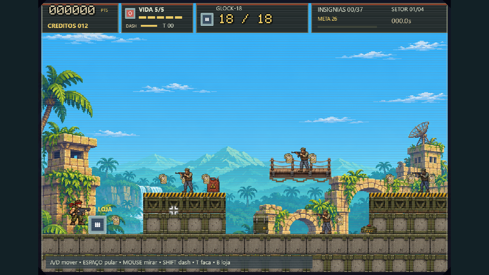
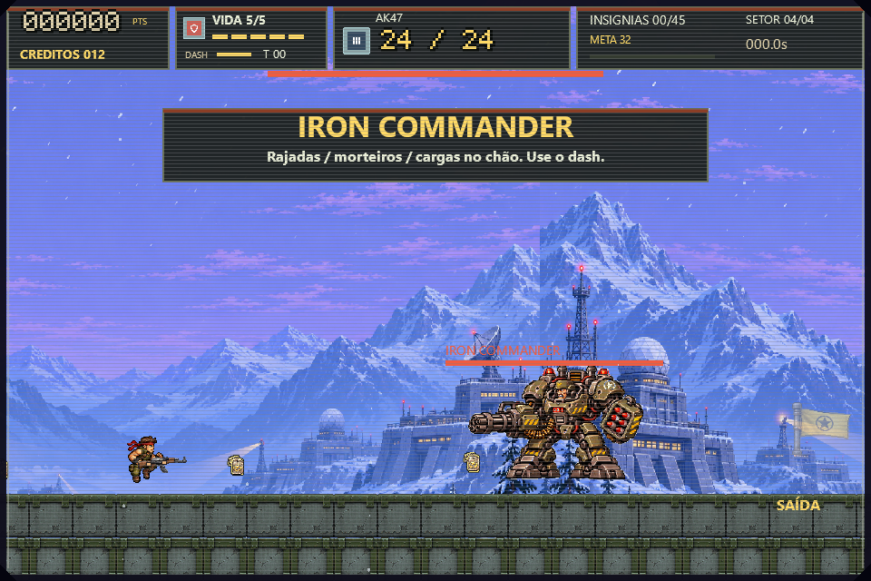

V8 — mira, tela cheia e arte militar
Capturas nativas reais; estados de loja/arena preparados para QA.
Plataformas militares, caixa de aço e insígnias com contraste

Tela cheia1920×1080 com proporção preservada

Arena do Iron Commander

Arsenal e cadências ajustadas